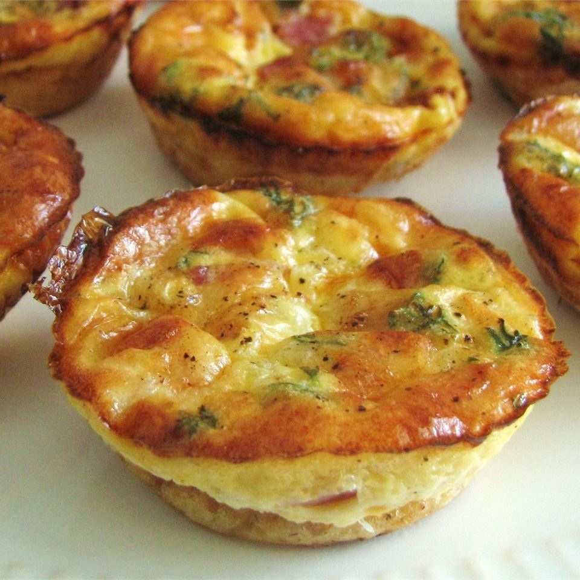

Mini Quiche

Description
Recipe for Mini Quiche
- Prep: 15 mins
- Cook: 15 mins
- Total: 30 mins
- Yield: 24 mini quiche
Ingredients
- 6 slices bacon, chopped
- 1 onion, chopped
- 3 eggs
- ¾ cup buttermilk baking mix
- 1½ tablespoons chopped fresh parsley
- 2 cups shredded cheese
Steps
- Preheat the oven to 350 degrees F (175 degrees C). Grease 2 mini muffin pans.
- In a large skillet over medium heat, fry bacon and onion together for about 5 minutes, or until bacon is crisp. Drain and set aside.
- In a medium bowl, beat the eggs. Stir in the baking mix, parsley, shredded cheese, bacon and onion. Spoon into greased muffin cups.
- Bake for 10 to 15 minutes in the preheated oven, or until the tops are lightly browned.
- Allow mini quiche to cool in the pan before carefully removing with a small knife or spatula.
Back
Recipe from Allrecipes.com